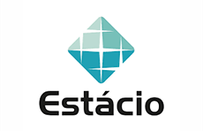

<div id="tab6">
    <h2> Logística  </h2>

    <div class="curso1">
			
			<a target="_blank" href="https://querobolsa.com.br/cursos-e-faculdades/logistica"> Bacharelado em Logistica</a>
			<p><b> Duração:</b> Em média, 4 anos.</p>
		</div>

		<div class="curso2">
			
			<a target="_blank" href="https://estacio.br/cursos/graduacao/logistica?gclid=Cj0KCQiAg_KbBhDLARIsANx7wAyqatd50VAKW2cbO2qr0yKc9FB--TvlJDy01T_t-i2YH5rSLSU_2ZwaAlpsEALw_wcB&gclsrc=aw.ds"> Técnologo em Logistica</a>
			<p><b> Duração:</b> 2 anos.</p>
		</div>

		<div class="curso3">
			
			<a target="_blank" href="https://loja.anhembionline.com.br/logistica-tecnologo"> Técnologo em Logistica </a>
			<p><b> Duração:</b> 2 anos.</p>
		</div>

		<div class="curso5">
			
			<a target="_blank" href="https://www.tecnicosenai.com.br/cursos/logistica/"> Técnico em Logistica </a>
			<p><b> Duração: </b> 18 meses.</p>
		</div>
</div>

  